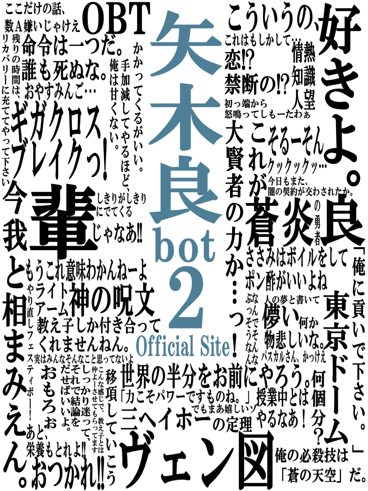

 矢木良bot2について 矢木良bot2は、蒼炎の勇者「矢木良」(やぎちゃん)の名言・迷言をTwitterにつぶやくbotです。 つぶやきを見る 運営方針・利用上の注意 矢木良bot2では、稼働継続のために閲覧者の皆様に閲覧上の注意を設けています。 注意を読む アップデート情報 ツイートbotシステムの継続的な開発を行なっています。 バージョン履歴 応募フォーム つぶやく名言や迷言、ヘッダー画像の応募を受け付けています。 応募する 公式ブログ お知らせややぎちゃんと管理人によるブログを掲載。 ブログを見る お問い合わせ